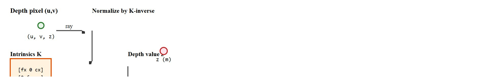
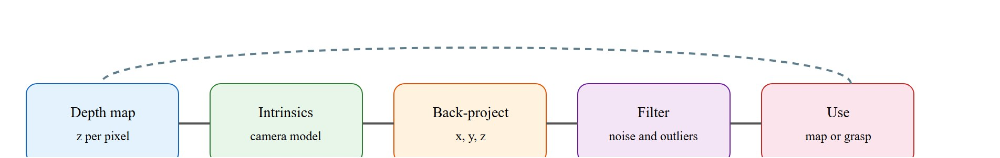

For Point clouds and depth maps, geometry earns its place when it changes reachability, clearance, grasping, exploration, or recovery in the log.
A Patient Embodied AI Agent
This section assumes familiarity with camera intrinsics and coordinate frame transforms covered in sections 4.6 and 4.4. The back-projection math introduced here is applied directly in section 28.3, which builds occupancy grids and signed-distance fields from point clouds. These representations recur throughout Part IX alongside manipulation planning, particularly in sections 42.2 and 45.2, where point cloud geometry drives grasp selection and foothold decisions.
A robot arm reaches for a cup and misses by four centimeters. The RGB camera saw the cup clearly; it simply had no idea how far away it was. Depth maps and point clouds exist to close that gap, and they have become the default 3D currency of embodied AI precisely because cheap solid-state LiDAR (light detection and ranging, a sensor that measures distance by timing reflected laser pulses) and neural depth estimation now produce metric geometry in real time on edge hardware. In this section you will back-project depth pixels into metric point clouds, learn to manage the failure modes that actually matter (holes, registration drift, outliers), and trace exactly how those choices propagate to downstream grasping, collision checking, and navigation decisions.
Show a robot a perfect, pin-sharp photo of a coffee cup and it still cannot pick the cup up: a 2D image says what something looks like but says nothing about how far away it is. A robot arm planning to grasp a cup needs to know the cup is 0.42 m away, not just that it occupies 80 pixels. A mobile base avoiding a chair leg needs the leg's actual position in the room, not its screen location. Depth maps solve this by attaching a distance measurement to each pixel; point clouds solve it further by giving every sample a metric position in a shared coordinate frame. Figure 28.2A shows this lift from a flat depth image to a sparse, filterable cloud of metric points. Without this step, manipulation and navigation planning cannot reason about reachability, clearance, or collision.
A depth value is not decoration: it is the difference between a gripper that closes on an object and one that closes on air two centimeters short. Figure 28.2.2 traces the geometry step by step, from a single depth pixel through the intrinsics matrix to a metric point in the world frame.

For point clouds and depth maps, audit depth holes, registration error, voxel size (where a voxel is a small 3D cube used to group nearby points for downsampling), outlier removal, normal estimation, and frame transforms. Registration, the process of aligning two point clouds captured from different viewpoints or times into one consistent coordinate frame, is covered in depth in section 29.5; here it matters only as one of several places where a bad frame transform can silently corrupt a cloud. The action evidence is whether those choices changed grasp, collision, or clearance decisions. Treat the representation as a typed state estimate, not as a visualization.
For Point clouds and depth maps, the representation is embodied only when it changes an admissible action, safety margin, exploration request, or recovery path.
Figure 28.2.1 should be read as the Point clouds and depth maps handoff diagram: sensor evidence, geometric representation, uncertainty, latency, and action consumer are separate failure points.

Back-projection converts each valid depth pixel into a 3D point in the camera frame.
$P_c(u,v)=z(u,v)K^{-1}[u,v,1]^T,\quad P_w=T_{wc}P_c$
The camera intrinsics $K$ define the ray for each pixel. The transform $T_{wc}$ moves the point into the world or robot frame, where it can be merged, filtered, and queried by action modules.
| Design Choice | Use When | Control Risk |
|---|---|---|
| Voxel downsample | Large clouds need real-time processing | Too coarse a voxel hides thin obstacles. |
| Outlier removal | Noisy sensors or reflective surfaces | Aggressive filters remove small task-relevant objects. |
| Normal estimation | Grasping, placement, surface following | Normals become unstable on sparse or mixed surfaces. |
Before reading on, consider this: if a depth sensor reports a pixel as invalid because the target surface is transparent glass, and your pipeline silently treats that as zero depth, where does the back-projected point land in the robot's world frame? The answer changes whether the planner believes there is an obstacle at the camera origin or no obstacle at all.
Code Fragment 28.2.1 back-projects a 2 by 2 depth map into four 3D points. This tiny array is the same math Open3D applies to thousands of pixels.
# Back-project a tiny depth map into camera-frame points.
# Each pixel becomes one metric sample after applying intrinsics.
import numpy as np
depth = np.array([[1.0, 1.2], [0.9, 1.1]])
fx = fy = 500.0
cx = cy = 0.5
points = []
for v in range(depth.shape[0]):
for u in range(depth.shape[1]):
z = depth[v, u]
x = (u - cx) * z / fx
y = (v - cy) * z / fy
points.append((round(x, 4), round(y, 4), round(float(z), 2)))
print(points)These expected output samples are nearly centered laterally, so the main variation is depth, not horizontal spread. That is the interpretation to carry into planning: the cloud suggests a mostly frontal surface patch whose geometry changes along z by about 30 cm.
Trace the formula $x=(u-c_x)z/f_x,\ y=(v-c_y)z/f_y$ with concrete numbers. Take pixel (u,v)=(640, 200) from a 1280x720 frame, intrinsics fx=fy=600, cx=640, cy=360, and a measured depth z=2.0 m.
u - cx = 640 - 640 = 0, and v - cy = 200 - 360 = -160.x = 0 * 2.0 / 600 = 0.000 m; y = -160 * 2.0 / 600 = -0.533 m.z = 2.000 m. The camera-frame point is P_c = (0.000, -0.533, 2.000).x = 0 exactly, which is correct. It sits 160 px above center, and with negative-y-is-up image convention that maps to a point 0.533 m above the optical axis at 2 m range. Now apply T_wc to land it in the robot frame.Back-projection gives each point a position, but a gripper needs more than position: it needs to know which way the surface faces. Normal estimation assigns a surface orientation vector to each point by fitting a local plane to its nearest neighbors. A gripper that approaches a cup at the wrong angle will slip. The grasp planner needs surface normals to align the finger pad perpendicular to the contact surface. On a legged robot, normals on foothold candidates indicate slope: a 30-degree normal tilt signals a surface the foot may slide on. Without normals, the planner sees geometry but not orientation. This reduces grasping to position-only control and drives up slip failures on real hardware. Adding surface normals to a bin-picking system typically cuts re-grasp attempts from roughly 8 per object to 1 or 2, because the gripper arrives aligned to the contact surface rather than relying on compliance to correct a skewed approach.
The algorithm collects the $k$ nearest neighbors for each point (typically $k = 10$ to $30$), computes their covariance matrix, and takes the eigenvector (a direction that the covariance matrix leaves unrotated, only rescaled) with the smallest eigenvalue (the amount of spread along that direction) as the normal, flipping it toward the viewpoint to resolve orientation. At surface boundaries the neighbors straddle two surfaces, so the fitted plane mixes both and the normal lands between them. That is why the table flags instability on mixed surfaces.
Think of spreading a handful of marbles on a tabletop and then sliding a thin sheet of cardboard through them so it wobbles as little as possible. The direction the cardboard refuses to lie flat is the surface normal. The covariance matrix measures how much the neighborhood of points spreads in each direction; the direction with the least spread is the one perpendicular to the local surface, just as the cardboard resists tilting into the flattest plane. At a corner or edge, the marbles sit on two meeting surfaces, so no single flat card fits cleanly, and the computed normal lands somewhere in between, pointing at neither surface faithfully.
So far: a depth pixel is back-projected through the intrinsics into a metric 3D point, that point gets a surface normal from the covariance of its nearest neighbors, and the normal is what tells a gripper or foot which way the surface faces, not just where it is.
Open3D creates point clouds from RGB-D (Red-Green-Blue-Depth) images in a few lines and handles vectorized storage, visualization, and many filters. Keep the hand calculation in mind, because most point-cloud bugs are still unit, intrinsics, or transform bugs.
When calling open3d.geometry.PointCloud.create_from_depth_image(), the depth_scale parameter must match your sensor's raw encoding: RealSense and most ROS (Robot Operating System) depth topics store depth in millimeters, so pass depth_scale=1000.0 to convert to meters; leaving it at the default of 1.0 places every point 1000x too far from the camera. Verify by printing the z coordinate of a known target at 1 m; if you read roughly 1000.0 instead of 1.0, the scale is wrong. Pair this check with depth_trunc set to your sensor's reliable range (for example, 3.0 m for a D435) to discard the noisy tail rather than propagating it into the map.
Consider a specific case. The Intel RealSense D435 reports depth at 848x480 at 90 fps, with a usable range of roughly 0.2 m to 3 m and roughly 2% depth error at 1 m. At 1 m range and fx = fy = 600, a single pixel offset shifts the back-projected point by about 1.7 mm laterally. That is fine for a 5 cm cup but not for a 3 mm connector pin. Legged platforms such as Boston Dynamics' Spot typically use similar structured-light or stereo depth sensors to build local point-cloud terrain maps for foothold selection, commonly at voxel sizes around 2 cm for navigation and sub-centimeter crops for manipulation. The sensor choice, voxel size, and filtering threshold are therefore design decisions tied directly to the tolerance of the consuming action.
A single depth frame is only as trustworthy as the pose used to place it in the world frame. When a robot fuses point clouds from a moving camera, each new frame is registered (aligned) against the accumulated map using the estimated camera pose at capture time; if that pose estimate drifts, typically because of accumulated odometry error or a missed loop closure, every point back-projected with it lands in the wrong place, even though the underlying depth reading was correct. In practice this shows up as a "double wall" or smeared corner in the accumulated cloud rather than a single crisp surface. The fix is not local to this section's math: it requires the pose-graph and loop-closure correction covered in section 29.5, which re-anchors older frames once drift is detected. Here, the actionable habit is to timestamp every point cloud with the pose estimate that produced it, so a downstream drift correction can re-transform old points instead of discarding them.
A point cloud is a sample, not a solid object. Empty space between samples may be free, unseen, filtered out, or outside the sensor range.
A common misconception is that a depth map or point cloud gives the robot complete 3D knowledge of the scene. In reality, a single-viewpoint depth capture only represents surfaces directly visible to the sensor: occluded regions, the backs of objects, and areas outside the field of view contain no depth information at all, yet they may hold obstacles critical for grasping or navigation. In embodied AI this matters immediately because a robot planning a grasp or a foothold cannot distinguish "confirmed free space" from "never observed" in a one-shot cloud. The correct mental model is that a point cloud is a partial, directional sample of visible geometry, and safe action planning requires either active view planning to reduce occlusion, explicit unknown-space tracking (as in occupancy grids), or conservative margins wherever the cloud is silent.
A bin-picking system can voxel-downsample a point cloud for speed, but it should keep a high-resolution crop around the planned grasp contact so thin edges and handles are not erased.
Amazon's Sparrow and Robin manipulation cells back-project RGB-D frames into per-item point clouds, then estimate surface normals to pick the suction or pinch grasp least likely to slip on packaging. The pipeline crops a high-resolution cloud around each candidate contact while voxel-downsampling the surrounding bin for speed, exactly the speed-versus-fidelity tradeoff described in this section.
For Point clouds and depth maps, the perception result must answer what action changed, what uncertainty changed, and what log would reproduce the decision. Otherwise the output is still visualization, not embodied evidence.
For Point clouds and depth maps, evaluate the representation inside the consuming action loop with calibration, frame transform, representation version, latency, selected action, and failure label.
For Point clouds and depth maps, perturb exactly one geometric assumption, such as depth dropout, scale, occlusion, pose drift, motion, or calibration, then record the action change.
Depth maps from structured-light sensors (sensors that project a known infrared pattern and infer depth from how it distorts on surfaces) return invalid (NaN or zero) readings on dark, transparent, or specular (mirror-like, reflecting light in a single direction rather than scattering it) surfaces: black fabric, glass, and polished metal absorb or scatter the projected pattern. When these invalid pixels are silently back-projected as z = 0, the resulting points cluster at the camera origin and corrupt any downstream map or grasp planner. Always validate depth pixels before back-projection and log the fraction of invalid pixels per frame; a sudden spike signals a surface material the sensor cannot handle, not just noise.
Direction 1: Feedforward monocular (single-camera) metric depth at robot speed. Metric depth estimation from a single RGB image has crossed the real-time threshold for edge deployment. Depth Anything V2 (Yang et al., 2024, Meta FAIR) achieves sub-100 ms per frame on a single GPU while matching or surpassing stereo baselines on indoor robotics benchmarks as of 2024, removing the need for structured-light hardware in cost-sensitive platforms. The active frontier is closing the remaining 5-15% gap on thin and transparent objects that confound all current feed-forward methods.
Direction 2: 3D Gaussian Splatting as a live robot scene representation. 3D Gaussian Splatting (Kerbl et al., 2023, INRIA) and its 2024 extensions for dynamic scenes (e.g., Deformable 3D Gaussians, Wu et al., 2024) allow a robot to maintain a photorealistic, queryable scene model that updates at 10-30 Hz on a desktop GPU. Several 2024 manipulation systems use Gaussian maps to recover occluded geometry and plan re-grasp moves without a second sensor view, directly addressing the single-viewpoint occlusion problem flagged in this section.
Direction 3: Point-cloud tokenization for vision-language-action models. Large robot policies such as pi0 (Black et al., Physical Intelligence, 2024) and OpenVLA (Kim et al., 2024) now ingest geometric tokens derived from depth-lifted point clouds. The key unsolved engineering question is resolution selection: too coarse a voxel grid (above 20 mm) erases thin objects like USB cables; too fine (below 3 mm) exceeds the context budget of current transformer backbones at inference time.
Open problem for PhD students: How should a robot policy adaptively select point-cloud voxel resolution per object class and manipulation tolerance during a single episode, without a fixed grid committed before inference? A solution requires jointly optimizing sensor coverage, tokenization cost, and grasp success rate on a mixed-tolerance task set, a benchmark that does not yet exist.
Beginner (weekend): Depth-to-point-cloud visualizer with Open3D. Build a Python script that reads depth frames from an Intel RealSense D435 (or a recorded ROS2 bag file) using the pyrealsense2 library, back-projects each frame into a point cloud with Open3D, and displays it in an interactive 3D viewer. The key challenge is getting the depth_scale and depth_trunc parameters right so points land at physically correct distances rather than 1000x too far.
Intermediate (1 to 2 weeks): Grasp-pose estimator driven by surface normals in PyBullet. Load a tabletop scene in PyBullet, attach a simulated depth camera, back-project the depth buffer into a point cloud, estimate surface normals with Open3D's estimate_normals, and pass normal-aligned grasp candidates to a simple parallel-jaw gripper controller. The key challenge is handling sparse or boundary points where normal estimation is unstable, and verifying that the gripper approach direction actually aligns with the contact surface rather than slipping.
Section 28.3 extends individual point clouds into multi-view scene reconstruction, where object identity, pose uncertainty, and persistent state must survive across changing viewpoints.
Open3D. RGB-D image tutorial. https://www.open3d.org/docs/release/tutorial/geometry/rgbd_image.html
Shows how maintained tooling converts RGB-D images into point clouds.
OpenCV. Camera calibration and 3D reconstruction documentation. https://docs.opencv.org/4.x/d9/d0c/group__calib3d.html
Defines the camera model needed for back-projection and frame transforms.
Can you name the representation, the consuming action, the uncertainty or freshness field, and the failure label for Point clouds and depth maps? If any one is missing, the section is not yet ready for a robot replay log.
Depth maps become useful for robotics when they are back-projected, transformed, filtered, timestamped, and tied to the action that will consume the cloud.
Create a 3 by 3 depth map with one invalid pixel. Describe how you would reject the invalid point, downsample the cloud, and preserve a grasp-critical edge.
Goal: see firsthand how intrinsics, depth scale, and voxel size change the metric geometry a planner would consume.
Tools: Python with open3d (pip install open3d); use the bundled sample with open3d.data.SampleRedwoodRGBDImages(), so no robot or camera is needed.
Steps: (1) Load one color and depth pair, build an RGBDImage, and call create_from_rgbd_image with the dataset's PinholeCameraIntrinsic to get a point cloud. (2) Visualize it with draw_geometries. (3) Apply voxel_down_sample, then estimate_normals.
What to vary: set depth_scale to 1.0 versus 1000.0; sweep voxel_size across 0.005, 0.02, and 0.05 m; change fx by plus or minus 20%.
What to observe: the wrong depth scale pushes the whole cloud 1000x away; large voxels erase thin structures (chair legs, cable); a wrong focal length stretches or squashes lateral spacing while leaving z untouched. Budget 15 to 30 minutes.